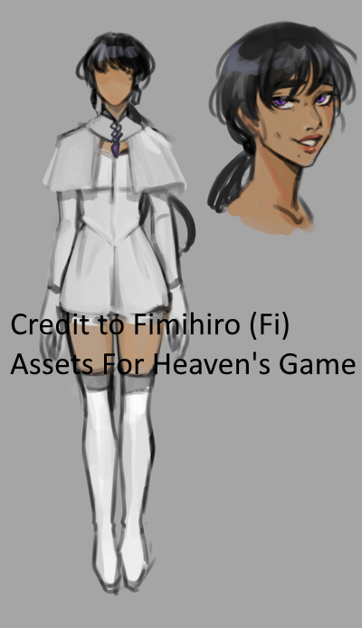

And I got told by my editor friend, to put it plainly, my writing was chopped.
I admit I had rushed the draft, completing about ten minutes of narration/dialogue for unplanned concept within eight hours.
But the critique still gave me some serious whiplash. My other friends told me I was doing good. While I didn't wholly believe them, I thought what I was writing had potential and was thorougly entertained by it. My editor friend gave me a blunt reality check lined with constructive criticism. I appreciate what he did.
Yet i'm now stuck with some anxiety that is seriously hindering my next steps. I was really excited to see my characters come to life so I preemptively asked an artist to sketch some character designs for my protagonist, Zafira. I think it came out phenomenal.

I feel pressure to make the narrative Zafira goes through awesome. And I feel a sense of urgency because I've put myself out there already. Today, I am left feeling devastated that I might need way more time to reach a level that warrants polished visuals.
I know that there's no rules gatekeeping commission art, but I can't help but feel like an overly eager idiot for showing my draft to all these artists. I hope they don't think I'm a moron.
I know i'm a somewhat intelligent individual, and I think i'm a decent writer. But I might be an abhorrent storyteller, and need to sharpen my skills.
I don't want everyone's effort to go to waste and for my friends, who were really excited, to lose their interest
I don't want to lose Awaiz, Aproximia and Zusa's support.